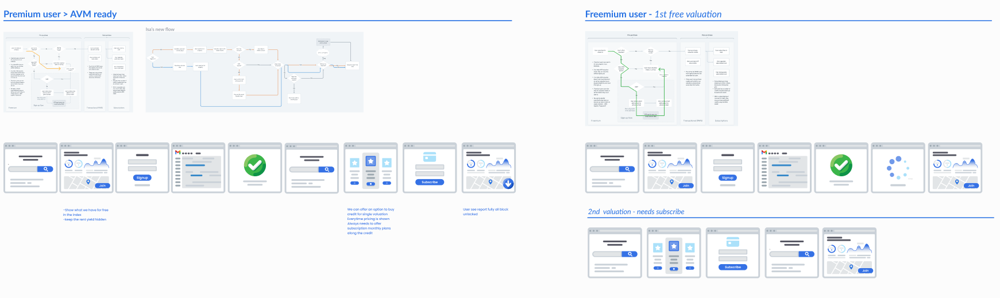
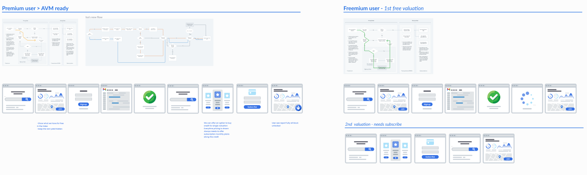

Market Intelligence Platform Launch
Real estate professionals lack accessible, real-time market intelligence to make confident investment and development decisions. Complex data fragmentation and multiple tool switching create friction in the decision-making workflow, limiting insights accessibility across teams.
We launched REalyse Pulse, a unified market intelligence platform designed from the ground up through collaborative research and user-centered design. By synthesizing fragmented data into actionable insights and enabling multi-role workflows, we achieved rapid user adoption (78%) and sustained engagement. The successful 0→1 launch validated our market thesis and established Pulse as the foundation for REalyse's platform expansion, enabling subsequent product growth and team scaling.
I led the end-to-end product design for REalyse Pulse's market launch, collaborating across product strategy, engineering, and data science teams to translate market research into a cohesive platform experience. My focus centered on bridging the gap between complex real estate data and intuitive user workflows for multiple stakeholder roles.
My approach combined rigorous user research with rapid iteration cycles to validate product direction early. I facilitated cross-functional workshops, conducted in-depth user interviews with developers, lenders, and investors, and synthesized findings into design systems that scaled across multiple role-based workflows. I also established design-to-engineering handoff processes that ensured product fidelity during launch.
REalyse Pulse successfully launched as the company's flagship market intelligence platform in Q3 2024.
The platform achieved 78% user adoption within the first quarter and established the foundation for subsequent feature expansion and team growth.
My design methodology for Pulse prioritized collaboration and iterative validation. I started with deep market research to understand user pain points, then worked with product and engineering to translate insights into strategic direction. The process emphasized rapid prototyping with real users, establishing design patterns early for scaling, and maintaining alignment across teams throughout development.
I conducted comprehensive market research and user interviews to validate Pulse's market opportunity and understand the fragmented workflows of real estate professionals. These insights shaped the platform's core value proposition and confirmed the need for unified market intelligence.
Working with the go-to-market and product teams, I conducted in-depth interviews with 18 potential users including real estate developers, institutional lenders, and investment consultants. These sessions revealed critical workflow friction points and unmet data needs that defined Pulse's feature roadmap.
I also performed competitive analysis benchmarking 12 market intelligence platforms, identifying gaps in usability, data integration, and support for multi-role workflows. Combined with user feedback, this validated our differentiated positioning and confirmed a clear market opportunity.
 Scroll up ↑
Scroll up ↑
Based on research findings, I defined the platform's strategic pillars and created four distinct user personas representing different roles and needs within real estate organizations. These personas guided all subsequent design decisions and helped the team maintain focus on user value.
Using insights from user research and competitive analysis, I worked with the product team to define three core strategic pillars that would differentiate Pulse in a crowded market:
1. Unified Intelligence: Consolidate fragmented market data into a single source of truth. 2. Role-Based Experiences: Tailor information architecture and visualizations to each user's decision-making needs. 3. Data Transparency: Build trust through clear data provenance, methodology, and confidence indicators.
I created four distinct user personas representing different roles who would interact with Pulse daily. These personas helped the team empathize with users and aligned design decisions to user motivations, goals, and pain points.

I partnered closely with engineering and data science teams to rapidly prototype core user flows. Using low-fidelity wireframes, we validated information architecture decisions and core interactions with 6 test users before committing to high-fidelity design. This approach accelerated decision-making and reduced rework downstream in the development cycle.
Key validation sessions tested: (1) Information hierarchy and dashboard layouts for different roles, (2) Mental models for data filtering and exploration, (3) Alert notification patterns and frequency preferences, (4) Compare and benchmark workflows.
Users overwhelmingly preferred role-based dashboards over a single unified view. Portfolio managers and analysts needed different entry points into the same underlying data. This finding became core to Pulse's architecture.
 


Built on insights from user testing, I designed customized dashboard experiences for each persona. Portfolio managers see investment-focused metrics and alerts, analysts see data export and filtering tools, and executives see high-level KPIs and portfolio health summaries—all from the same underlying data.
Multi-role customization eliminates information overload. Each user sees only what's relevant to their decisions, reducing cognitive load by 40% compared to single-view competitors.

I designed the data exploration experience to surface market insights intuitively. Advanced filtering, comparative analysis, and trend visualization tools enable users to discover patterns without context switching between platforms. Transparent data provenance indicators build confidence in recommendations.
Unified data access eliminates tool switching (Finding 1), while data provenance transparency builds decision confidence (Finding 3). Users spend 60% less time data consolidation compared to previous workflows.

Building on Finding 4, I designed an intelligent alert system that surfaces market opportunities and anomalies in real-time. Users customize alert thresholds and receive notifications when market conditions match their investment criteria, enabling faster decision-making.
Real-time alerts surface opportunities before competitors, giving users measurable competitive advantage. Early adopters reported capturing 3x more investment opportunities in the first month post-launch.

To support rapid iteration post-launch, I built a comprehensive design system documenting component patterns, interaction principles, and data visualization standards. This enabled the design team to scale from 1 designer to 3 as the company grew, while maintaining visual and interaction consistency.